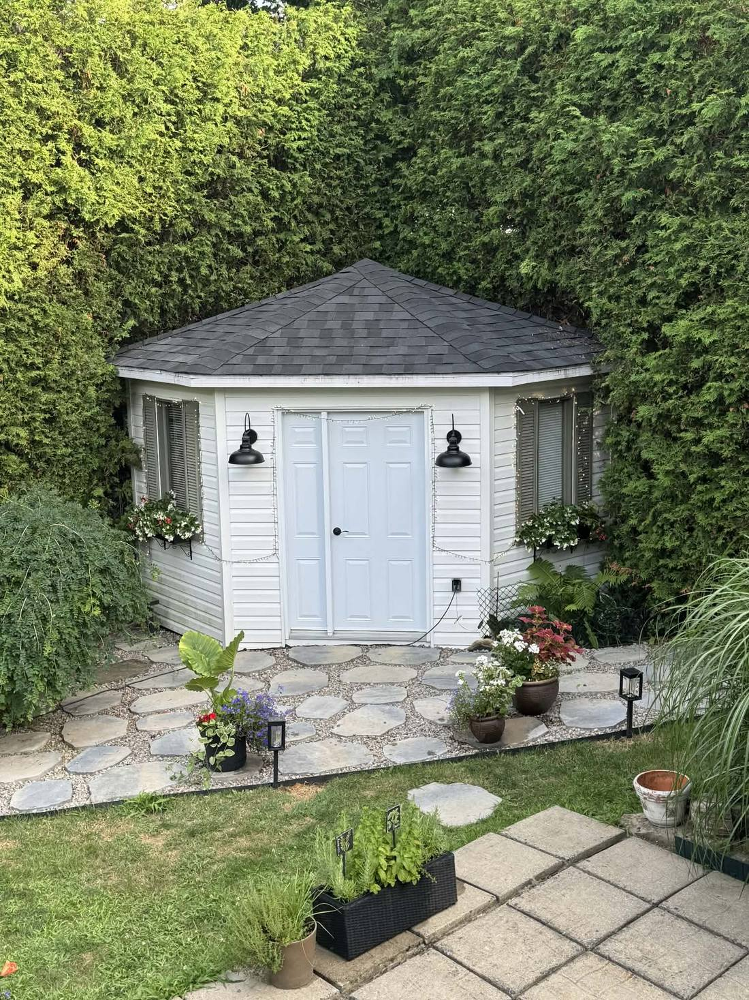
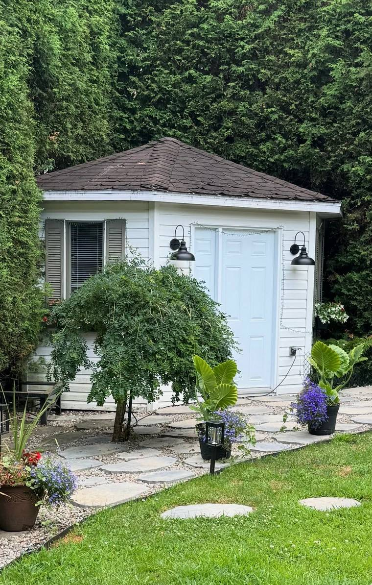
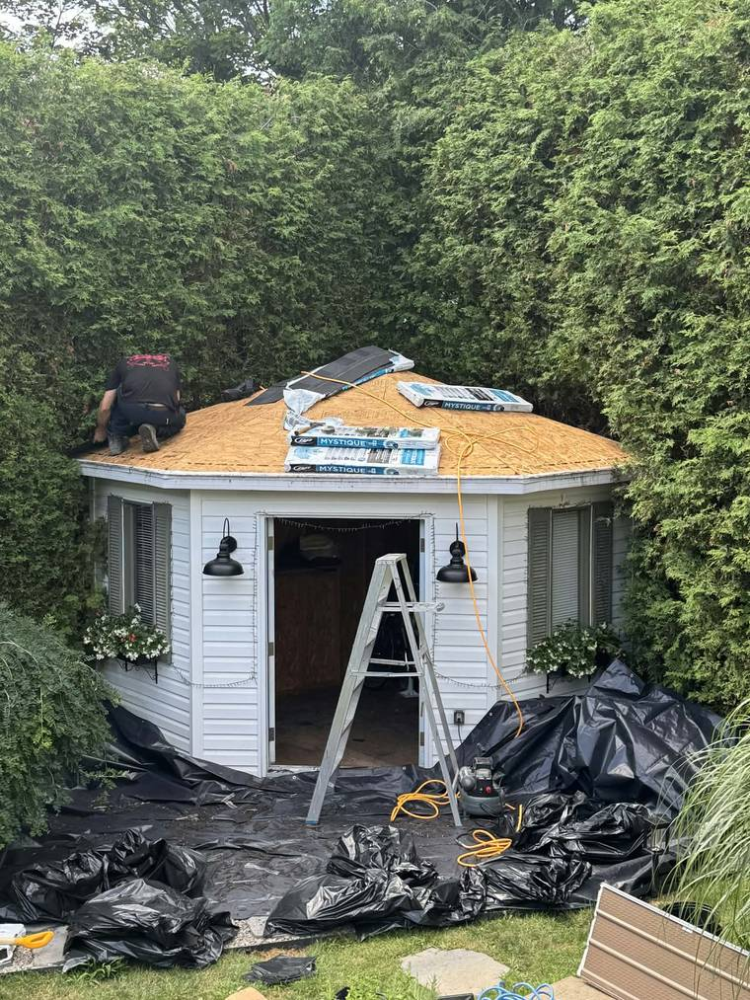
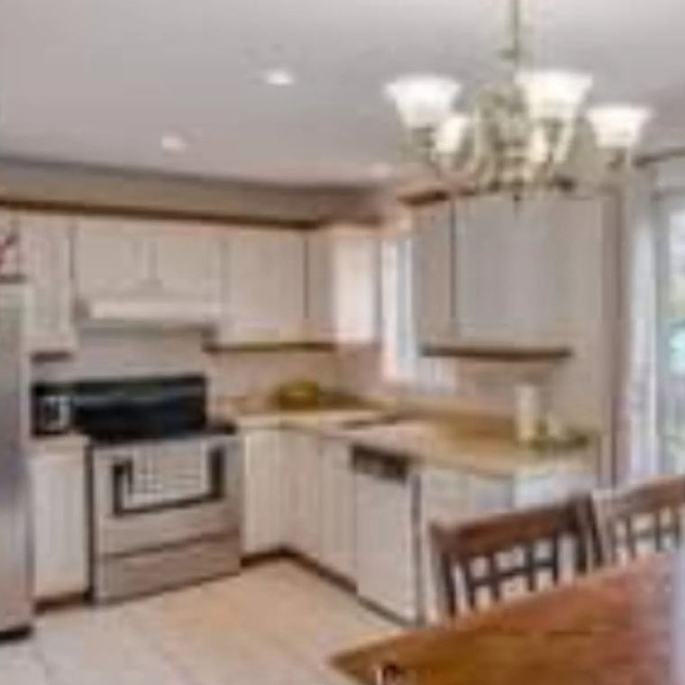
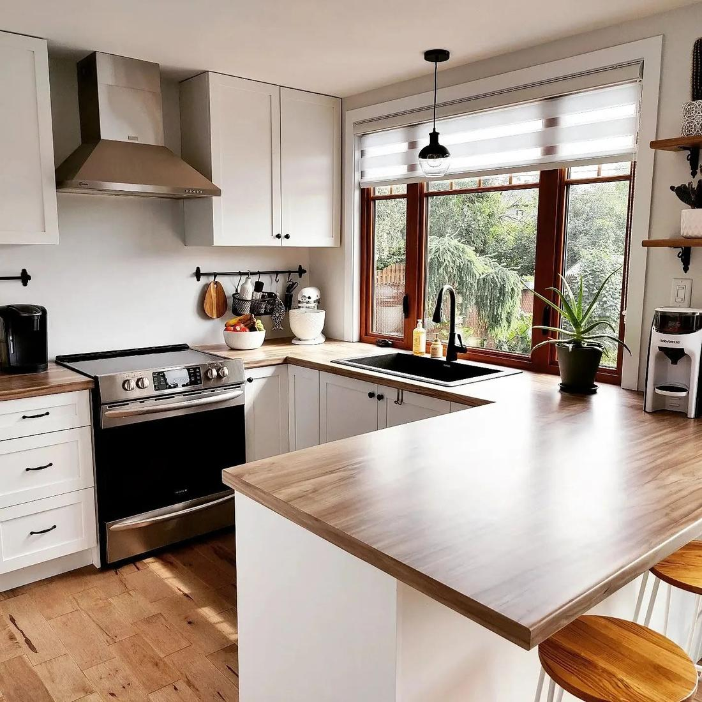
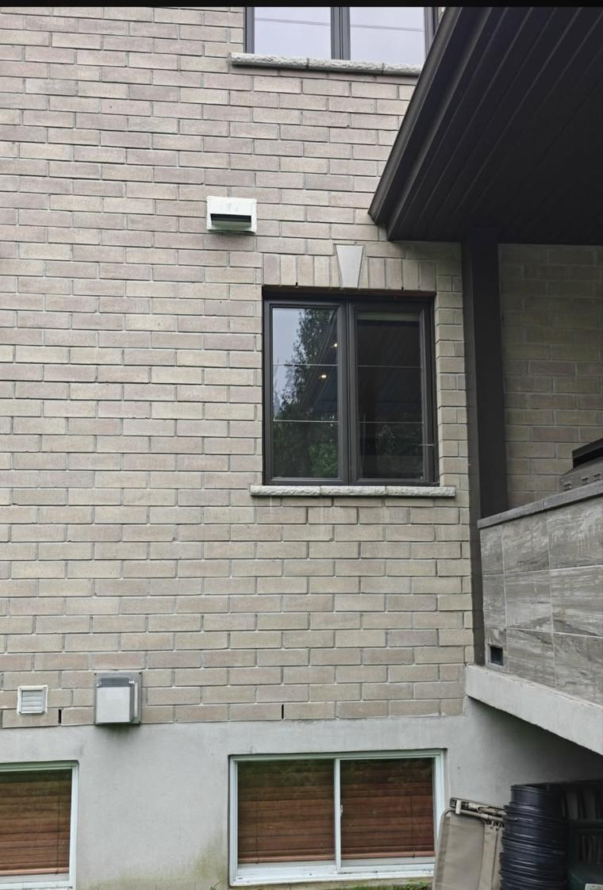
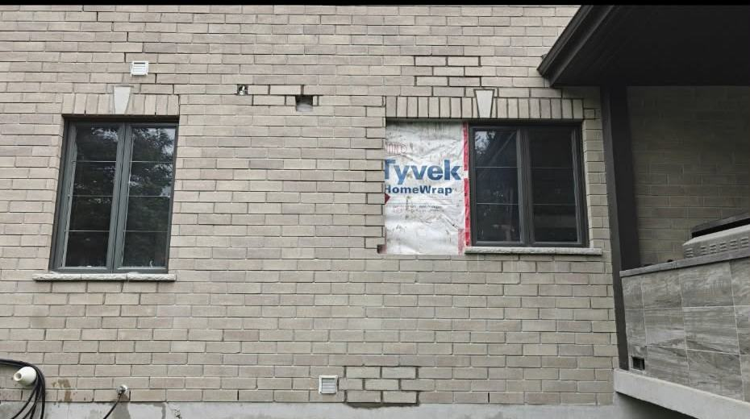

01
Toiture et enveloppe
Arrachage jusqu'au pontage, inspection du contreplaqué à nu, bardeau d'asphalte posé selon les spécifications du fabricant, soffites ventilés et fourrures d'ancrage.
- Bardeau
- Soffites
- Ventilation
Toiture, portes et fenêtres, maçonnerie, salles de bain, cuisines et finition intérieure. Chaque projet part d'une soumission écrite détaillée, poste par poste, pour que vous sachiez exactement ce que vous payez avant que le premier outil sorte du camion.
De l'extérieur qui protège la maison jusqu'à la finition qu'on voit tous les jours. Un seul interlocuteur du début à la fin du chantier.
Arrachage jusqu'au pontage, inspection du contreplaqué à nu, bardeau d'asphalte posé selon les spécifications du fabricant, soffites ventilés et fourrures d'ancrage.
Remplacement de fenêtres et de thermos, portes-patio, agrandissement d'ouverture, calfeutrage de finition et reprise des allèges.
Ouverture dans un mur de brique, pose de fer d'angle et de linteau, membrane conforme, allèges, rejointement de fissures et reprise de soldats.
Rénovation complète, de la démolition à la finition : membrane, céramique, plomberie coordonnée, ventilation et pose des accessoires.
Réaménagement, armoires, comptoirs, dosseret et raccords. On coordonne les corps de métier pour que la séquence tienne et que la cuisine revienne vite en service.
Gypse, joints, moulures, portes, planchers et peinture. C'est la partie que vous regardez tous les jours : c'est celle qu'on soigne le plus.
La plupart des mauvaises expériences de rénovation viennent d'un flou au départ. On enlève le flou avant de commencer.
On se déplace, on mesure, on regarde ce qui se cache derrière. On nomme les inconnues au lieu de les découvrir en cours de route.
Un document détaillé : les travaux poste par poste, ce qui est inclus, ce qui est exclu, le prix ferme et l'échéancier. Vous décidez avec toute l'information.
Un chantier tenu propre, des versements liés à l'avancement réel des travaux, et tout changement confirmé par écrit avant d'être exécuté.
On fait le tour ensemble, on règle la liste de déficiences, et la garantie sur la main-d'œuvre est écrite au contrat.
Des projets réels, avec les photos prises sur place. Avant, pendant, après — pas de rendu, pas de banque d'images.

Des écureuils avaient arraché les soffites et s'installaient dans l'entretoit. Refaire seulement le revêtement aurait laissé le pourtour ouvert et le problème serait revenu.
Le vieux bardeau a donc été arraché jusqu'au pontage, le contreplaqué inspecté à nu, puis la toiture refaite en bardeau d'asphalte noir. Le pourtour a été repris dans la même intervention : deux rangées de fourrures de bois 1×3 sur les quatre côtés, pour que les soffites neufs soient vissés dans du bois solide plutôt que de tenir en friction.


Je suis tellement contente de ne plus avoir de visiteurs à l'intérieur. Merci encore, tu travailles vraiment bien.Renée — toiture de cabanon et soffites, Laval
Une cuisine fermée, sombre, avec des comptoirs fatigués et un plancher de vinyle. Tout a été refait : armoires neuves, comptoirs de bois massif, dosseret, éclairage, et la fenêtre au-dessus de l'évier agrandie pour ouvrir la vue sur la cour.
Le plancher de bois franc a été posé dans la cuisine et l'aire de vie, d'un seul tenant, pour que l'espace se lise comme une seule pièce.



Ouverture élargie à 80 pouces dans un mur porteur : fer d'angle en acier peint, membrane sur linteau, diamant recentré, soldat refait dans le haut et allèges à face éclatée arrondie. La reprise structurale est faite selon le plan signé par l'ingénieur.
Ce type d'ouvrage touche à la fois la maçonnerie et la structure. C'est le genre de travail qui ne se rattrape pas : il se planifie avant de casser la brique.

Relevé complet, mise en concurrence de plusieurs fabricants avec et sans verre à faible émissivité pour que le client choisisse en connaissance de cause, puis remplacement des unités et calfeutrage de finition.
Un rayon volontairement serré, pour être sur le chantier tôt le matin et rester disponible après la livraison.
Décrivez ce que vous voulez faire. On se déplace, on regarde, et vous recevez une soumission écrite détaillée — sans frais et sans engagement.
Demander une soumission